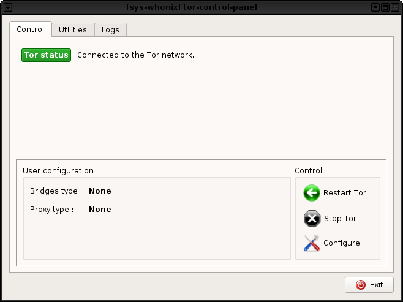
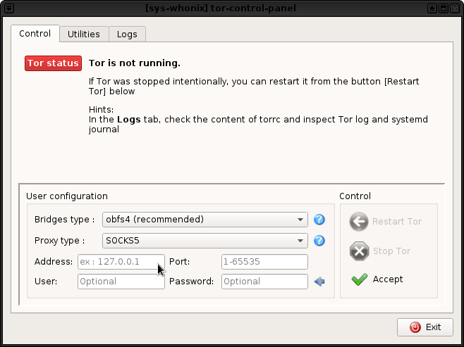
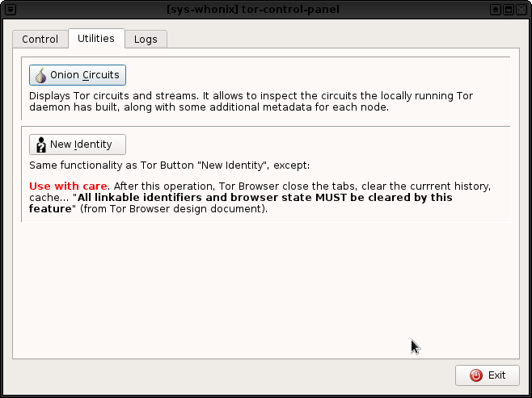

Some screenshots.




For Whonix 14 only, all virtualizers.
Installation instructions.
In whonix-gw-14 for Qubes, in Whonix-Gateway for VirtualBox or KVM.
-
Install the software for building the package
sudo apt-get install git genmkfile ruby-ronn debhelper build-essential python3-ipy -
Get the package
Qubes users:
To be able to get the package from github, full networking has to be allowed in the template.
Inwhonix-gw-14-->Qubes Settings-->Networking, selectsys-whonixinstead of(none).
This setup should be temporary, as it is recommended against allowing networking in Qubes
templates.
Revert to(none)after installation.All users:
In/home/user/:git clone https://github.com/troubadoour/tor-control-panel.git -
Install the package
cd tor-control-panel make deb-icup
The package should be installed.
Qubes users should shutdown the template and restart sys-whonix, After refreshing the applications
in Qubes Settings, the program can be run from Start Menu --> sys-whonix --> tor-control-panel
Other users should be able to run it from Start Menu --> Applications --> tor-control-panel.
Alternatively, in a sys-whonix or Whonix-Gateway terminal, run:
kdesudo tor-control-panel &
 For example due to user misconfiguration and Tor failing to start. So crashing when it’s not available is bad.
For example due to user misconfiguration and Tor failing to start. So crashing when it’s not available is bad.